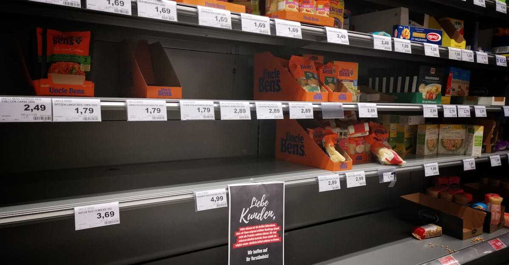

L'Élan Salarial en Zone Euro : Une Réalité Imminente
La Banque Centrale Européenne (BCE) a récemment envoyé un signal clair aux marchés et aux citoyens de la zone euro : la croissance des salaires devrait s'accélérer significativement au cours du second semestre de cette année. Cette prévision n'est pas anodine ; elle s'inscrit au cœur des préoccupations monétaires et économiques actuelles, notamment alors que l'institution de Francfort évalue la nécessité de nouvelles hausses de taux d'intérêt. Après une période d'incertitude économique marquée par la pandémie et la crise énergétique, cette accélération des salaires pourrait être perçue comme une bouffée d'oxygène pour les ménages, mais elle soulève également des questions complexes pour la stabilité des prix.
👉 À lire : Crédit entreprise en Europe : les banques durcissent le ton en 2026
Pourquoi cette accélération est-elle si scrutée ? Principalement parce que les salaires constituent une composante majeure des coûts de production pour les entreprises et, par ricochet, un facteur déterminant de l'inflation sous-jacente. Si les salaires augmentent rapidement, les entreprises pourraient être tentées de répercuter ces coûts accrus sur les prix à la consommation, alimentant ainsi une spirale inflationniste difficile à briser. La BCE, dont le mandat principal est de maintenir la stabilité des prix, se trouve donc face à un dilemme délicat. Comment concilier le soutien à l'économie avec la nécessité de contenir l'inflation qui, bien que ralentie par rapport à ses sommets, reste une préoccupation majeure ?
👉 À lire : Inflation au-delà de 3.5% : Que faire pour votre épargne ?
Cette dynamique salariale est le résultat de plusieurs facteurs convergents. D'une part, le marché du travail dans de nombreux pays de la zone euro a montré une résilience étonnante. Le taux de chômage a atteint des niveaux historiquement bas, créant une tension sur l'offre de main-d'œuvre. D'autre part, les travailleurs, ayant vu leur pouvoir d'achat érodé par la flambée des prix de l'énergie et des denrées alimentaires, réclament des compensations. Les négociations collectives sont devenues plus intenses, et les syndicats sont en position de force pour obtenir des augmentations significatives. L'effet des coûts énergétiques élevés, qui s'est propagé à l'ensemble de l'économie, se manifeste désormais dans les revendications salariales, créant ce que l'on appelle des «effets de second tour». Il ne s'agit plus seulement de compenser le passé, mais d'anticiper l'avenir, rendant la tâche de la BCE encore plus ardue. Cette situation complexe exige une analyse fine et des stratégies d'investissement adaptées, où la capacité à anticiper et à réagir rapidement devient un atout indéniable pour les épargnants.

La Danse Complexe de l'Inflation et des Salaires
L'interaction entre la croissance des salaires et l'inflation est l'un des mécanismes les plus fondamentaux et les plus redoutés de l'économie. C'est le fameux concept de la «spirale prix-salaires», une boucle de rétroaction où les augmentations de salaires entraînent des hausses de prix, qui à leur tour justifient de nouvelles augmentations de salaires, et ainsi de suite. La BCE observe avec une attention particulière l'émergence de ces «effets de second tour» dont elle a maintes fois souligné le risque. Mais qu'est-ce que cela signifie concrètement pour l'épargnant moyen et l'investisseur avisé ?
Historiquement, de telles spirales ont été difficiles à maîtriser une fois qu'elles prenaient de l'ampleur, conduisant souvent à des périodes d'inflation élevée et persistante. Pensons aux années 1970, où les chocs pétroliers ont été suivis de revendications salariales massives, plongeant de nombreuses économies occidentales dans la stagflation – une combinaison toxique de stagnation économique et d'inflation galopante. Aujourd'hui, bien que le contexte soit différent, la vigilance reste de mise. Les entreprises, confrontées à des coûts de main-d'œuvre plus élevés, ont deux options principales : soit absorber ces coûts en réduisant leurs marges – une option peu probable dans un environnement où la rentabilité est reine – soit les transférer aux consommateurs par des prix plus élevés. C'est ce transfert qui alimente l'inflation et érode le pouvoir d'achat.
Pour les ménages, une augmentation nominale des salaires peut sembler une bonne nouvelle. Cependant, si cette augmentation est entièrement ou majoritairement compensée par une hausse des prix, le gain en pouvoir d'achat réel est nul, voire négatif. C'est le paradoxe de l'inflation : on gagne plus, mais on peut acheter moins. Cette réalité pousse les consommateurs à revoir leurs habitudes de dépenses et, pour certains, à puiser dans leur épargne. Pour d'autres, cela renforce la nécessité d'une stratégie d'épargne et d'investissement qui non seulement protège leur capital de l'inflation, mais le fait également fructifier de manière significative. C'est là que les outils modernes, capables d'analyser ces dynamiques complexes en temps réel, deviennent indispensables pour préserver et développer son patrimoine. La capacité à anticiper ces mouvements et à ajuster ses placements en conséquence est une compétence qui va bien au-delà des capacités humaines traditionnelles, nécessitant une approche plus agile et informée.
La Banque Centrale Européenne Face à Son Dilemme
La position de la Banque Centrale Européenne est enviable et redoutable à la fois. Son unique et principal mandat est la stabilité des prix, ce qui signifie maintenir l'inflation à un objectif de 2% à moyen terme. Or, l'accélération de la croissance des salaires jette une ombre sur cet objectif. Quelles sont les options sur la table pour Christine Lagarde et son conseil des gouverneurs ?
Le scénario le plus évident serait de continuer à relever les taux d'intérêt. En rendant l'argent plus cher, la BCE cherche à freiner la demande, à ralentir l'économie et, par conséquent, à tempérer les pressions inflationnistes, y compris celles issues des salaires. Cependant, cette approche n'est pas sans risques. Une politique monétaire trop restrictive pourrait pousser la zone euro vers une récession, augmentant le chômage et créant des difficultés pour les entreprises et les ménages. C'est un équilibre délicat, une véritable funambule entre la lutte contre l'inflation et la préservation de la croissance économique.
« La BCE est prise entre le marteau de l'inflation et l'enclume de la récession. Chaque donnée économique est passée au crible, et la croissance des salaires est sans doute la plus critique de toutes en ce moment », a récemment commenté un analyste financier senior, soulignant l'intensité de la situation.
Un autre scénario pourrait impliquer une pause dans les hausses de taux, suivie d'une réévaluation constante de la situation. Si la BCE estime que l'accélération salariale est temporaire ou qu'elle ne se traduit pas entièrement par une inflation persistante, elle pourrait opter pour une approche plus attentiste. Cependant, cela risquerait de nuire à sa crédibilité et d'ancrer des attentes inflationnistes plus élevées parmi les acteurs économiques, rendant la tâche encore plus difficile à l'avenir. La communication de la BCE est donc cruciale : elle doit être claire, cohérente et crédible pour guider les anticipations des marchés et des agents économiques.
Pour l'investisseur, la direction des taux d'intérêt de la BCE a des implications directes sur de nombreux placements, des obligations d'État aux actions, en passant par l'immobilier. Comprendre les signaux envoyés par la BCE, même les plus subtils, est fondamental pour ajuster sa stratégie d'investissement. Dans ce contexte de forte incertitude, un outil capable de décrypter ces signaux et d'adapter un portefeuille en temps réel représente un avantage concurrentiel majeur. L'IA peut ici jouer un rôle déterminant en offrant une analyse prédictive et une réactivité sans précédent aux décisions monétaires.

Quels Impacts pour le Pouvoir d'Achat des Ménages ?
Au-delà des grands agrégats économiques et des décisions des banquiers centraux, la question la plus pressante pour la plupart des citoyens est celle de leur pouvoir d'achat. L'annonce d'une accélération de la croissance des salaires en zone euro est-elle une bonne nouvelle pour les ménages, ou un simple mirage inflationniste ? La réponse est nuancée et dépend fortement de la capacité de cette croissance salariale à dépasser l'inflation.
Il est essentiel de distinguer la croissance des salaires nominaux de la croissance des salaires réels. Les salaires nominaux sont les montants affichés sur la fiche de paie. Les salaires réels, eux, mesurent le pouvoir d'achat effectif après correction de l'inflation. Si les salaires augmentent de 4% mais que les prix augmentent de 5%, le pouvoir d'achat réel diminue de 1%. C'est une perte sèche pour le consommateur, même s'il a l'impression de gagner plus. La période récente a été particulièrement difficile pour les ménages européens, avec une inflation qui a souvent dépassé les augmentations salariales, entraînant une érosion significative du pouvoir d'achat.
L'accélération prévue par la BCE pourrait enfin permettre aux salaires de rattraper, voire de dépasser, l'inflation dans certains secteurs ou pays. Si tel est le cas, cela se traduirait par une augmentation tangible du pouvoir d'achat, ce qui pourrait stimuler la consommation et soutenir la croissance économique. Cependant, les disparités régionales au sein de la zone euro sont importantes. Certains pays, avec des marchés du travail plus tendus ou des structures de négociation salariale plus robustes, pourraient voir leurs salaires augmenter plus rapidement que d'autres. Cette divergence pourrait créer des tensions économiques et sociales à travers le continent.
Pour l'épargnant, cette situation met en lumière l'importance cruciale de la gestion de son patrimoine. Dans un environnement où l'inflation peut rapidement grignoter la valeur de l'épargne non investie, il devient impératif d'adopter des stratégies qui non seulement protègent le capital, mais le font fructifier. Laisser son argent dormir sur un compte bancaire non rémunéré, c'est s'assurer une perte de pouvoir d'achat à long terme. L'investissement intelligent, ajusté aux réalités macroéconomiques, est la clé pour maintenir et améliorer son niveau de vie. Comment s'assurer que ses placements sont toujours alignés avec les conditions économiques changeantes ? C'est une question que de plus en plus de Français se posent, et à laquelle les nouvelles technologies apportent des réponses innovantes.
Les Marchés Financiers à la Loupe : Réactions et Anticipations
Les marchés financiers sont des baromètres sensibles aux anticipations économiques. L'annonce d'une accélération de la croissance des salaires en zone euro, et les implications que cela a pour la politique de la BCE, sont scrutées avec une attention particulière par les investisseurs du monde entier. Comment réagissent les différentes classes d'actifs à de telles nouvelles ?
Les marchés obligataires, en première ligne, sont particulièrement affectés. Une inflation plus élevée, ou la perspective de hausses de taux d'intérêt pour la contenir, tend à faire baisser la valeur des obligations existantes et à augmenter les rendements des nouvelles émissions. Les investisseurs exigent en effet une compensation plus élevée pour détenir des obligations dont le pouvoir d'achat des remboursements futurs est menacé par l'inflation. Les rendements des obligations d'État allemandes (Bunds), souvent considérés comme une référence en zone euro, sont ainsi très sensibles à ce type d'information.
Sur les marchés actions, l'impact est plus nuancé. Une croissance salariale peut être positive si elle stimule la consommation et les revenus des entreprises. Cependant, si elle entraîne des hausses de coûts non compensées par des hausses de prix, elle peut éroder les marges bénéficiaires des entreprises, ce qui est négatif pour les cours boursiers. Les secteurs les plus sensibles aux coûts de main-d'œuvre, comme les services ou l'industrie manufacturière, pourraient être plus impactés. À l'inverse, les entreprises ayant un fort pouvoir de fixation des prix ou celles opérant dans des secteurs à forte valeur ajoutée et moins dépendants de la main-d'œuvre pourraient mieux résister, voire prospérer. La volatilité est souvent la compagne fidèle de ces périodes d'incertitude.
« Les marchés détestent l'incertitude, et la croissance des salaires en est une source majeure. Les investisseurs vont chercher à se protéger, privilégiant les actifs résilients et les stratégies qui s'adaptent rapidement aux changements de paradigme », a observé une figure éminente de la gestion d'actifs.
Enfin, le marché des devises réagit également. Si la BCE est perçue comme plus agressive dans sa lutte contre l'inflation en raison de la croissance salariale, cela pourrait renforcer l'euro. À l'inverse, si les marchés doutent de la capacité de la BCE à maîtriser l'inflation, l'euro pourrait s'affaiblir. Pour l'investisseur, la capacité à analyser ces interconnexions complexes et à ajuster son portefeuille en conséquence est primordiale. L'approche traditionnelle, basée sur des décisions espacées dans le temps, peut s'avérer insuffisante face à la rapidité des changements économiques. Une surveillance continue et une réactivité instantanée sont des atouts précieux que les technologies innovantes peuvent offrir, transformant ainsi la manière d'aborder l'investissement.
L'Épargne Intelligente à l'Heure des Incertitudes Économiques
Dans ce paysage économique mouvant, caractérisé par des signaux contradictoires entre inflation persistante et croissance salariale, l'épargne intelligente n'est plus un luxe, mais une nécessité. Les méthodes traditionnelles d'épargne et d'investissement, souvent basées sur des approches statiques ou des conseils génériques, peinent à offrir la protection et la performance requises pour naviguer dans ces eaux agitées. Comment alors optimiser son épargne et ses placements quand les variables économiques changent si rapidement ?
L'enjeu principal est de s'assurer que son capital ne perd pas de valeur face à l'inflation et qu'il est positionné pour capter les opportunités de croissance. Cela signifie ne pas se contenter de laisser son argent sur des comptes épargne à faible rendement, mais plutôt d'adopter une stratégie d'investissement dynamique et personnalisée. Une épargne intelligente, c'est avant tout une épargne qui comprend les risques et les opportunités du marché, qui s'adapte aux objectifs individuels et qui est capable de réagir aux informations macroéconomiques, comme les prévisions de croissance des salaires ou les décisions de taux de la BCE.
Les outils numériques et l'intelligence artificielle (IA) révolutionnent cette approche. Ils offrent la possibilité d'aller bien au-delà des analyses humaines classiques, en traitant d'énormes volumes de données économiques et financières en temps réel. Imaginez un système capable de surveiller non seulement les annonces officielles de la BCE, mais aussi les indicateurs avancés, les sentiments de marché, les tendances sectorielles et les mouvements de capitaux, pour ensuite ajuster vos placements de manière optimale. C'est précisément la promesse de l'épargne intelligente et de l'investissement automatisé par IA.
Plutôt que de paniquer à chaque nouvelle statistique économique ou de prendre des décisions impulsives, l'épargnant peut s'appuyer sur des algorithmes sophistiqués. Ces systèmes peuvent identifier les actifs les plus résilients à l'inflation, les secteurs porteurs en période de croissance salariale, ou les stratégies d'investissement qui minimisent les risques liés aux fluctuations des taux d'intérêt. L'objectif n'est pas de battre le marché à tout prix, mais de construire un portefeuille robuste et performant, adapté à un environnement économique en constante évolution. Cette approche proactive est fondamentale pour quiconque souhaite protéger et faire fructifier son patrimoine dans le long terme, en transformant l'incertitude en opportunité grâce à une gestion avisées.
L'IA au Service de Vos Placements : Anticiper et Optimiser
L'intégration de l'intelligence artificielle dans la gestion de l'épargne et des placements représente une véritable rupture technologique. Face à la complexité croissante des marchés et à la rapidité des changements économiques, l'IA offre une capacité d'analyse et de réaction qui surpasse largement les méthodes traditionnelles. Mais comment concrètement un agent IA peut-il optimiser votre épargne et vos placements 24h/24, en tenant compte des dynamiques comme l'accélération des salaires en zone euro ?
Premièrement, un agent IA excelle dans la surveillance et l'analyse des données. Il ne se contente pas de lire les rapports de la BCE ; il agrège et interprète des milliers d'indicateurs économiques mondiaux, des rapports d'entreprises, des flux de nouvelles financières, des sentiments de marché sur les réseaux sociaux, et bien plus encore. Face à une prévision d'accélération des salaires, l'IA peut instantanément évaluer les implications pour différents secteurs économiques, les risques d'inflation, et les réactions probables des banques centrales. Cette capacité d'analyse en temps réel permet d'identifier des tendances émergentes bien avant qu'elles ne soient pleinement reconnues par le marché.
Deuxièmement, l'IA est capable de modéliser des scénarios complexes. En se basant sur les données analysées, elle peut simuler l'impact de différentes politiques monétaires (hausses de taux, pauses, etc.) sur votre portefeuille. Elle peut identifier les classes d'actifs ou les titres spécifiques qui sont susceptibles de performer ou de sous-performer dans chaque scénario. Par exemple, si l'IA anticipe que l'accélération des salaires va entraîner une hausse des taux plus agressive, elle pourrait suggérer de réduire l'exposition aux obligations à long terme et d'augmenter celle aux titres à court terme ou aux actions de sociétés résilientes à l'inflation.
Troisièmement, la force de l'IA réside dans son automatisation et sa réactivité. Contrairement à un conseiller humain qui ne peut réviser un portefeuille que périodiquement, un agent IA peut ajuster vos placements 24h/24, 7j/7, dès qu'une nouvelle donnée pertinente est détectée ou qu'une condition de marché est remplie. Cela signifie que votre portefeuille est constamment optimisé pour faire face aux défis et saisir les opportunités, comme celles découlant des changements dans la croissance salariale ou les politiques de la BCE. Cette agilité est cruciale dans un monde où une information peut faire bouger les marchés en quelques minutes. L'IA ne dort jamais, elle apprend et s'adapte, offrant une tranquillité d'esprit inestimable à l'épargnant moderne qui souhaite maximiser ses chances de succès financier.
Naviguer dans le Nouveau Paysage Économique avec Confiance
L'accélération de la croissance des salaires en zone euro, bien que potentiellement bénéfique pour le pouvoir d'achat à terme, introduit une complexité supplémentaire dans un environnement économique déjà incertain. Entre les défis de l'inflation, les décisions cruciales de la Banque Centrale Européenne et les réactions imprévisibles des marchés financiers, il est plus que jamais essentiel pour les épargnants et les investisseurs d'adopter une approche stratégique et éclairée.
Ce que nous retenons de cette analyse, c'est que l'heure n'est plus à l'immobilisme. La protection de son patrimoine et sa fructification exigent une vigilance constante et une capacité d'adaptation rapide. Les méthodes traditionnelles d'épargne, trop lentes ou trop rigides, risquent de laisser les individus vulnérables aux fluctuations économiques et à l'érosion du pouvoir d'achat. La distinction entre croissance nominale et réelle des salaires souligne l'importance de regarder au-delà des chiffres bruts et de comprendre les mécanismes sous-jacents qui impactent notre quotidien financier.
Dans ce contexte, l'intelligence artificielle se révèle être un allié inestimable. En offrant une analyse approfondie et en temps réel des indicateurs économiques, une modélisation sophistiquée des scénarios futurs et une automatisation des ajustements de portefeuille, elle permet de transformer les incertitudes en opportunités. Un outil comme l'Agent IA, conçu pour optimiser l'épargne et les placements 24h/24, offre une solution concrète pour naviguer dans ce nouveau paysage économique avec une confiance renouvelée. Il ne s'agit pas de prédire l'avenir avec certitude, mais de se doter des meilleurs outils pour y faire face, quelles que soient les turbulences. L'avenir de l'épargne est intelligent, proactif et résolument tourné vers l'optimisation continue.